Applies the normalisation described in geom_track(). ggplot2 runs a
position after the stat and the geom setup, so the layer must already
carry y – track_angles() adds it.
Usage
position_track(
band,
node = NULL,
geom_name = NULL,
anchored = FALSE,
band_fill = FALSE,
stack = FALSE,
scales = c("free", "fixed"),
limits = NULL,
baseline = NULL,
width = 0.9,
offset = 0
)Arguments
- band
Track name or
c(r0, r1)radius interval. A name can only be resolved inside aggcircos()plot (the layout declares the bands); standalone use needs the numeric form.- node
Name of the node id column; only used to group stacks.
- geom_name
Name of the track geometry.
- anchored
Stretch from the band's inner edge (default
FALSE).- band_fill
Fill the whole band radially (
xmin = r0,xmax = r1) instead of scaling a value into it. Set bygeom_track()for"tile".- stack, scales, limits, baseline, width, offset
See
geom_track().
Details
The position holds plain vectors only (band, the normalisation
settings, the node column name) – never a layout or a node table, so one
position object can be shared by several layers without them seeing each
other's data (spec sec.8.2).
Examples
# the escape hatch: reuse the normalisation on any geom
set.seed(1)
d <- track_angles(
data.frame(id = "mpg", value = runif(10)),
"id", circos_layout(cor(mtcars)), 0.9, "point"
)
ggcircos(cor(mtcars), order = "hclust", tracks = c(values = 0.2)) +
ggplot2::geom_point(
data = d,
ggplot2::aes(x = value, y = y),
position = position_track(band = c(1.06, 1.26), anchored = TRUE),
inherit.aes = FALSE
)
